Projects / 02
LA Olympic Museum
Building as network: the Olympic timeline as a continuous ramp
The second project of the studio explores movement, sequence and program as the generators of a building. For an Olympic and Paralympic Museum in East Los Angeles, planned for the 2028 Games, on a triangular site shaped by the surrounding roads and next to the LA greenway path, the museum becomes a node between existing urban flows.
Design
The Olympic timeline itself becomes the circulation: the galleries unfold along a continuous ramp that wraps around the building, from the ancient games to the modern Olympics. At 1:12 a ramp needs about 120 ft per floor; the constraint became the idea. Inside the wrapped core, stacked floors hold interactive sports, education and media, while a spiral stair and a vertical core offer short cuts across the timeline.
Details
The ramp turns the museum inside out. Visitors moving along it are seen from the street, and the building reads as a network of paths rather than a closed box: about 37,000 sq ft of timeline galleries, interactive sports, education and media, auditorium, café and archive, held together by one slow, continuous route.
Building as network
The second project of the studio explores movement, sequence and program as the generators of a building. For an Olympic and Paralympic Museum in East Los Angeles, planned for the 2028 Games, the Olympic timeline itself becomes the circulation: the galleries unfold along a continuous ramp that wraps around the building, from the ancient games to the modern Olympics.
The ramp turns the museum inside out. Visitors moving along it are seen from the street, and the building reads as a network of paths rather than a closed box. Inside the wrapped core, stacked floors hold interactive sports, education and media, while a spiral stair and a vertical core offer short cuts across the timeline.
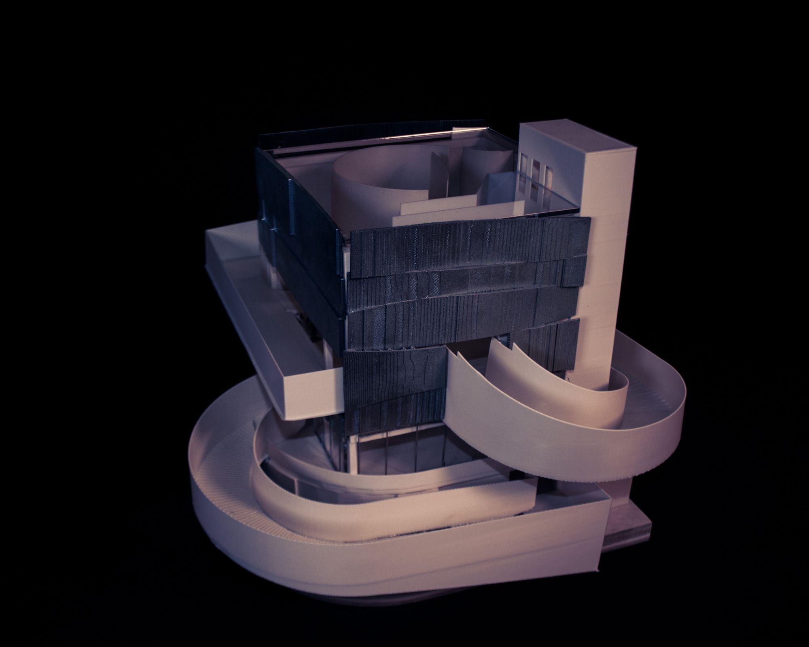
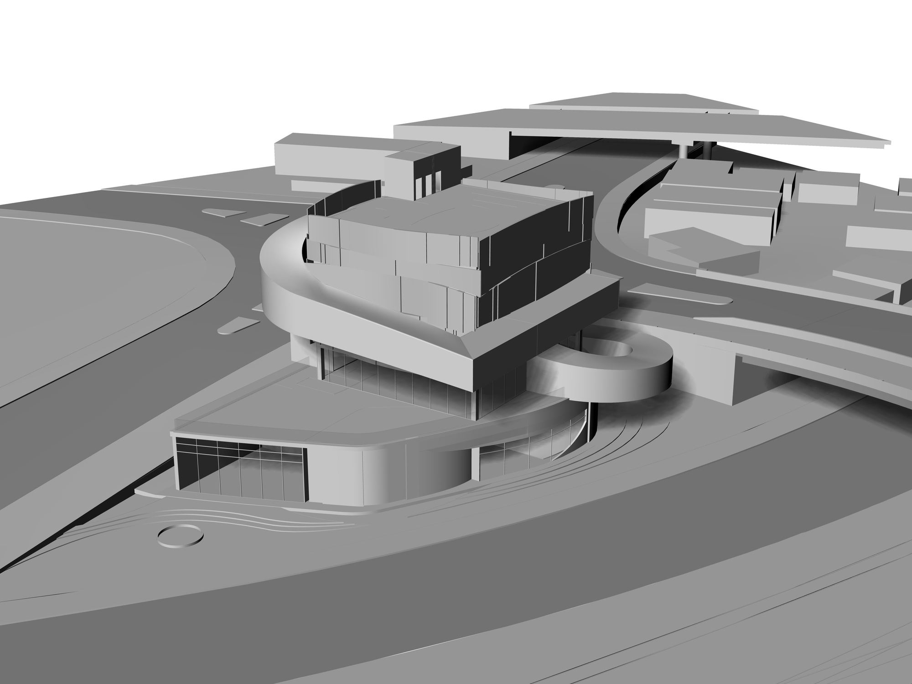
Site
The museum sits on a triangular site shaped by the surrounding roads and next to the LA greenway path, a node between existing urban flows that continues the research of the first project.
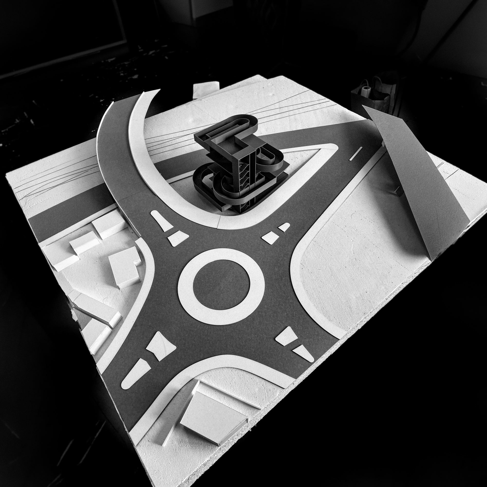
Program in section
- Olympic timeline galleries, from the ancient games to the modern Olympics
- Education and media
- Interactive sports activities
- Circulation and support programs
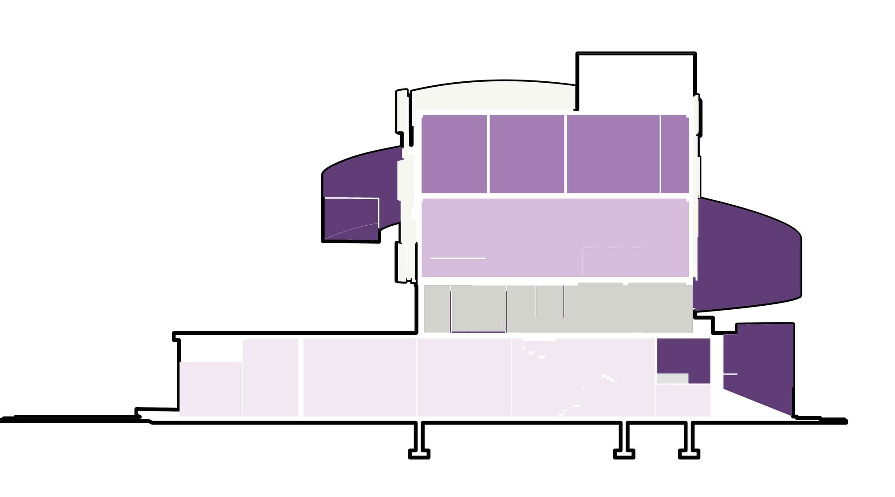
Interactive sports studies
The interactive floors were sized from the sports themselves: a snowboarding slopestyle course with its start area, jib obstacles, jumps and finish area, and a gymnastics floor with its performance area.
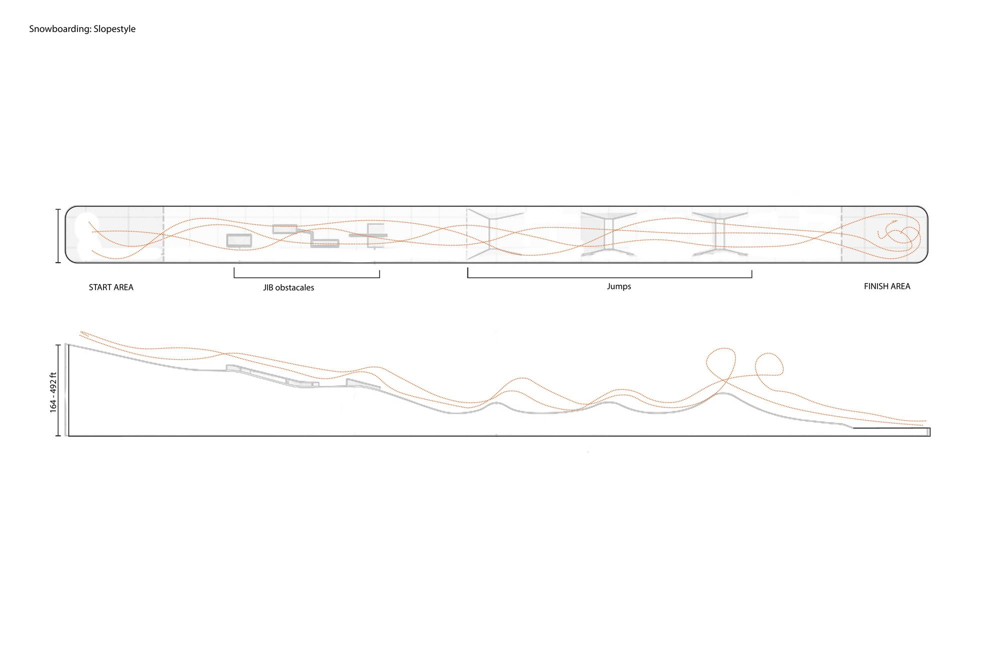
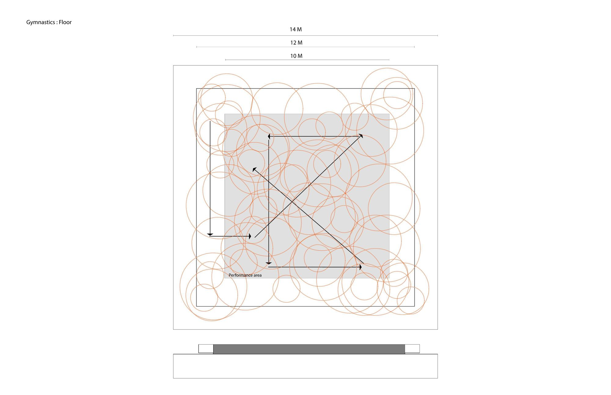
Circulation
The ramp is the museum's main route: a slow, continuous path that wraps the stacked core and links the street with every exhibition level, while the spiral stair and the vertical core give direct connections between floors. At 1:12 a ramp needs about 120 ft per floor; the constraint became the idea.
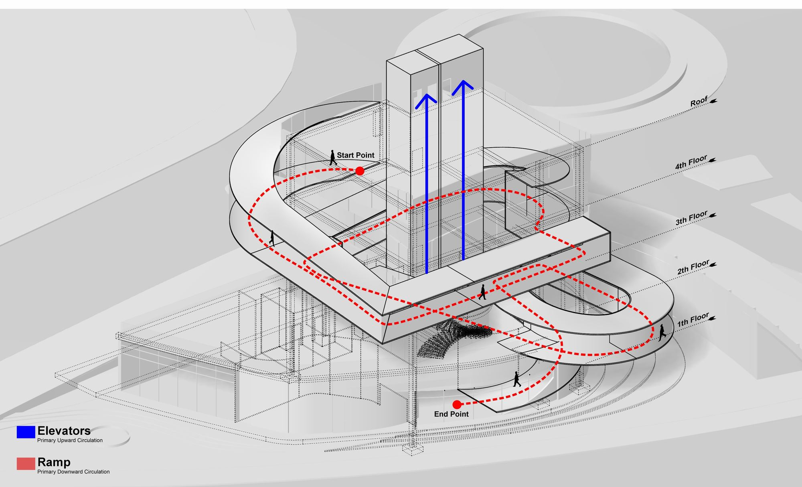
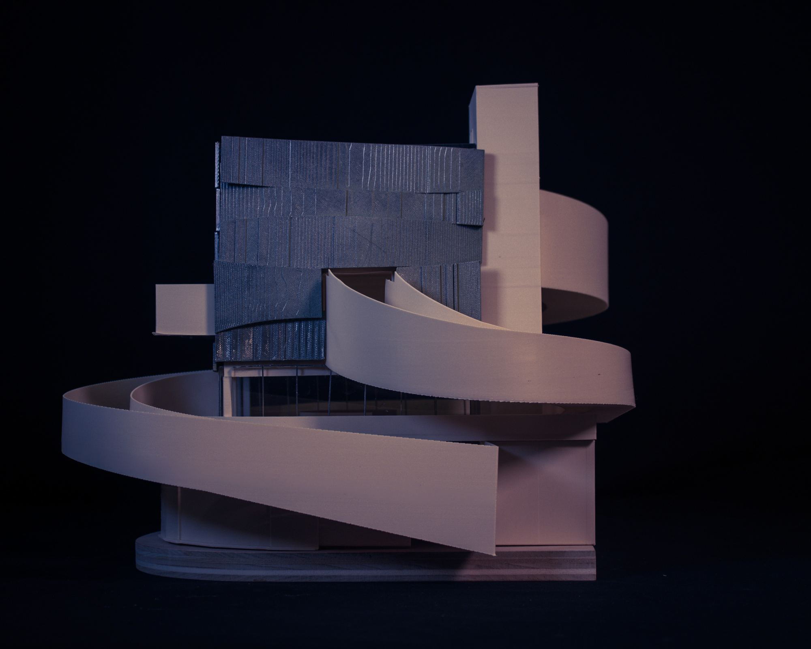
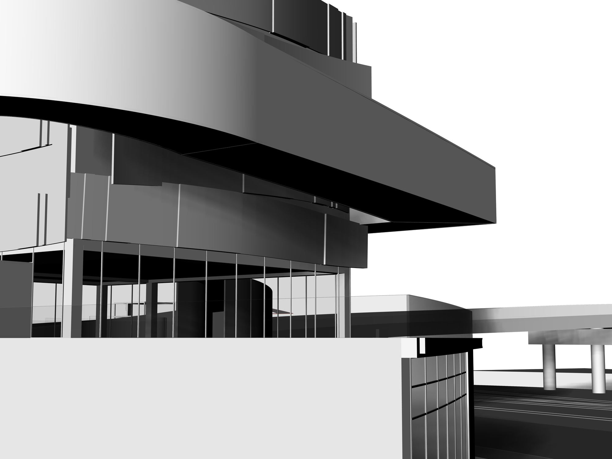
Program · approx. 37,000 sq ft
- Exhibition and timeline galleries
- Interactive sports activities
- Education spaces and media
- Auditorium and event space
- Lobby, tickets, museum shop and café
- Offices, storage and archive
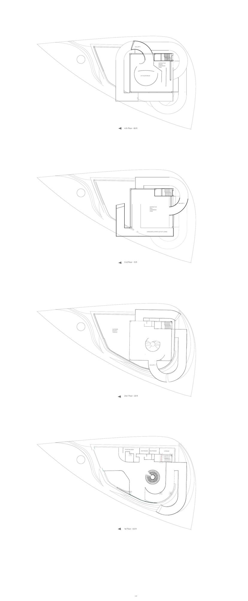
Sections and model
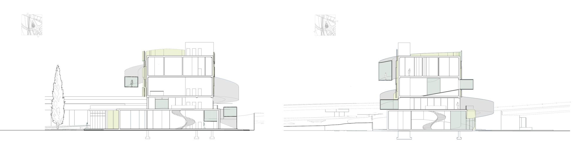
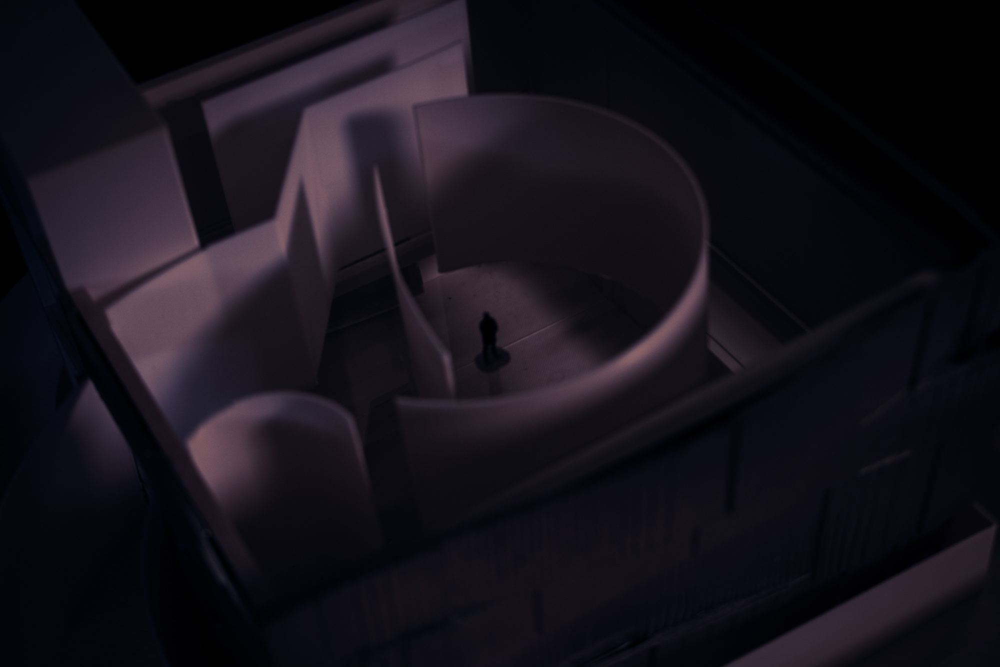
Process
The museum sits on a triangular site shaped by the surrounding roads, next to the LA greenway path: a node between existing urban flows that continues the research of the first project. The ramp links every exhibition level, while the spiral stair and the vertical core give direct connections between floors. At 1:12 a ramp needs about 120 ft per floor; the constraint became the idea.